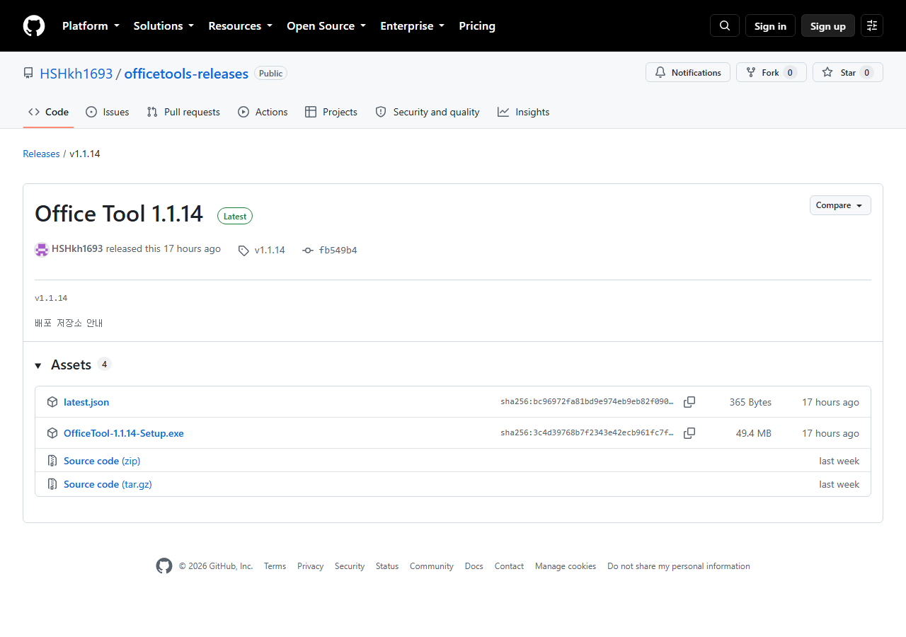
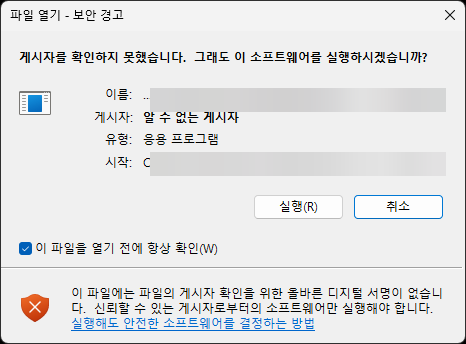
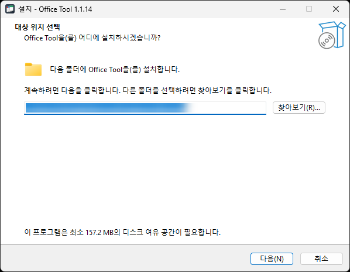
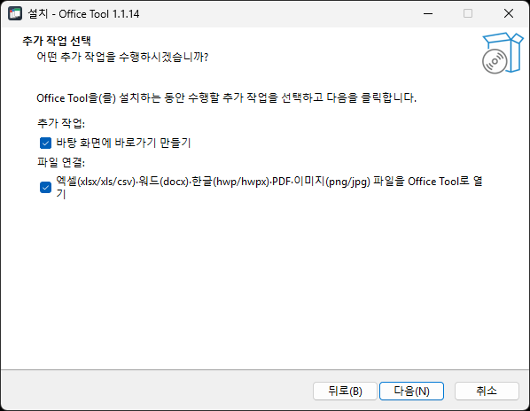
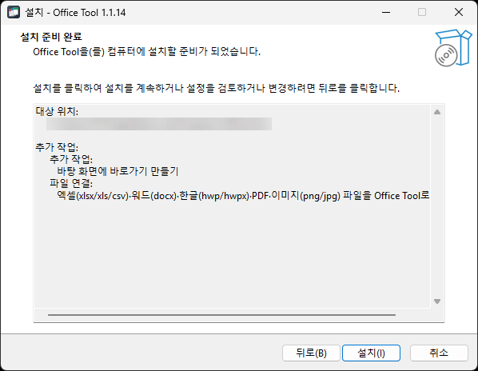
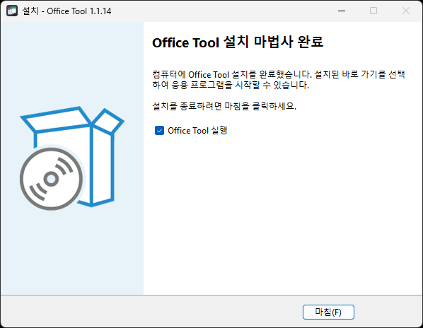
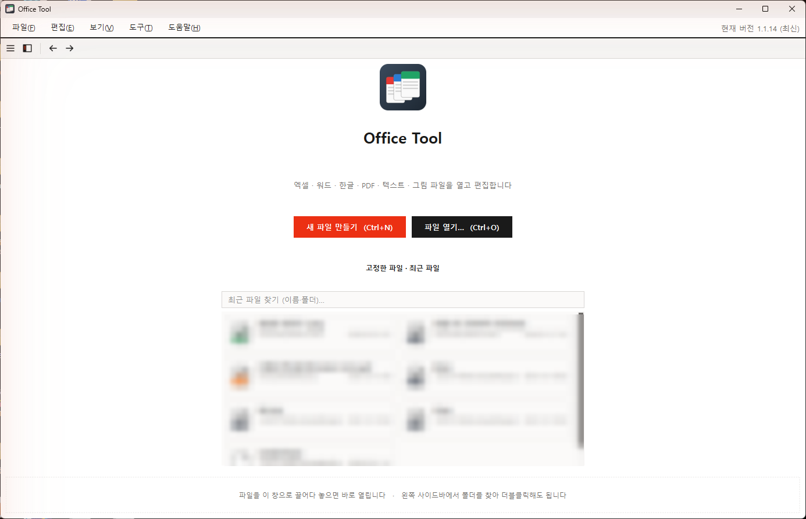
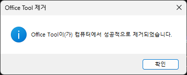

차례
0설치 전에 확인할 것
| 운영체제 | Windows 10 또는 Windows 11 (64비트) |
|---|---|
| 필요한 공간 | 약 160 MB |
| 관리자 권한 | 필요 없습니다. 내 계정 폴더 안에 설치되므로 관리자 비밀번호를 묻지 않습니다. |
| 다른 프로그램 | 엑셀·워드·한컴오피스가 없어도 됩니다. 있어도 서로 영향이 없습니다. |
1설치 파일 내려받기
아래 주소를 인터넷 브라우저(크롬, 엣지 등)의 주소창에 넣어 엽니다.
https://github.com/HSHkh1693/officetools-releases/releases/latest
페이지 아래쪽 Assets 목록에서 OfficeTool-버전-Setup.exe 를 클릭하면 내려받기가 시작됩니다. 다른 항목(latest.json, Source code)은 누르지 않아도 됩니다.

회사에서 직접 만든 프로그램이라 아직 인증서 서명이 없어 브라우저가 조심하라고 알리는 것입니다. 크롬은 다운로드 표시 옆의 ⋮ 또는 ∧ 를 눌러 보관(또는 계속)을 고르고, 엣지는 … → 유지 → 그래도 유지를 누르면 됩니다. 받은 파일은 보통 다운로드 폴더에 들어갑니다.
2설치 파일 실행하기 (보안 경고)
다운로드 폴더에서 OfficeTool-1.1.14-Setup.exe 를 두 번 클릭합니다. 처음 실행할 때 아래와 같은 창이 뜨면 실행(R) 을 누릅니다.

창 안의 추가 정보 글자를 누르면 실행 단추가 나타납니다. 그 단추를 누르면 됩니다. 어느 창이든 인증서 서명이 없는 프로그램이면 뜨는 안내이며, 위 GitHub 주소에서 받은 설치 파일이면 안전합니다.
3설치 위치 확인
설치 마법사의 첫 화면입니다. 설치 폴더가 미리 채워져 있으니 그대로 두고 다음(N) 을 누릅니다.

4추가 작업 선택
두 항목이 기본으로 켜져 있습니다. 그대로 두고 다음(N) 을 누르는 것을 권합니다.
- 바탕 화면에 바로가기 만들기: 바탕 화면에 Office Tool 아이콘이 생깁니다.
- 파일 연결: 엑셀·워드·한글·PDF·그림 파일을 두 번 클릭하면 Office Tool 로 열립니다. 엑셀이나 워드로 계속 열고 싶은 파일 종류가 있으면 이 항목을 끄거나, 설치 뒤 파일 우클릭 → "연결 프로그램"에서 바꿀 수 있습니다.

5설치 시작
지금까지 고른 내용을 보여 줍니다. 설치(I) 를 누르면 설치가 진행되고, 보통 몇 초 안에 끝납니다.

6설치 완료와 첫 실행
"설치 마법사 완료" 화면이 나오면 끝입니다. Office Tool 실행이 체크된 채로 마침(F) 을 누르면 프로그램이 바로 켜집니다.

처음 켜면 아래와 같은 시작 화면이 나옵니다. 새 파일 만들기 또는 파일 열기를 누르거나, 파일을 창 안으로 끌어다 놓으면 바로 열립니다.

7설치 뒤 알아 둘 것
- 자동 업데이트: 새 버전이 나오면 켤 때 "새 버전이 있습니다" 창이 뜹니다. 지금 업데이트를 누르면 알아서 내려받아 설치하고 다시 켜집니다. 바로 할 수 없으면 나중에를 누르세요. 도움말 → 업데이트 확인으로 직접 확인할 수도 있습니다.
- 트레이에 켜 두기: 창을 닫아도 프로그램은 작업 표시줄 오른쪽 트레이에 남아 있어 다음 파일이 빨리 열립니다. 완전히 끝내려면 트레이의 Office Tool 아이콘을 우클릭 → 종료.
- 사용 설명서: 프로그램 안에서 F1 또는 도움말 → 사용 설명서. 한국어/English 를 고를 수 있습니다.
- 파일은 표준 형식: Office Tool 로 저장한 xlsx·docx·hwpx·pdf 파일은 이 프로그램이 없는 PC 에서도 엑셀·워드·한컴오피스로 그대로 열립니다.
8자주 묻는 질문
Q. 설치 파일을 두 번 클릭해도 아무 일이 없어요.
브라우저가 파일을 차단한 경우입니다. 1단계의 안내대로 다운로드 목록에서 보관/유지를 누른 뒤 다시 실행하세요.
Q. 관리자 비밀번호를 물어보나요?
아니요. 내 계정 폴더에 설치되므로 묻지 않습니다. 만약 묻는다면 다른 프로그램의 창일 수 있으니 취소하고 다시 확인하세요.
Q. 이미 설치되어 있는데 또 설치해도 되나요?
됩니다. 같은 위치에 덮어씌워지고 설정과 최근 문서는 그대로 남습니다. 단, 켜져 있는 Office Tool 은 먼저 끝내 주세요(트레이 아이콘 우클릭 → 종료).
Q. 엑셀 파일이 Office Tool 로 열리는 게 싫어요.
파일을 우클릭 → 연결 프로그램 → 다른 앱 선택에서 Excel 을 고르고 "항상"을 체크하면 됩니다. Office Tool 은 그대로 두고 쓸 수 있습니다.
Q. 설치 파일의 버전 숫자가 이 안내와 달라요.
괜찮습니다. 가장 최근 버전을 받으면 되고, 설치 순서는 같습니다.
9제거(삭제) 방법
Windows 설정 → 앱 → 설치된 앱에서 Office Tool 을 찾아 제거를 누릅니다. 아래 확인 창에서 예(Y) 를 누르면 프로그램 파일이 지워집니다. 내 문서 파일은 지워지지 않습니다.
